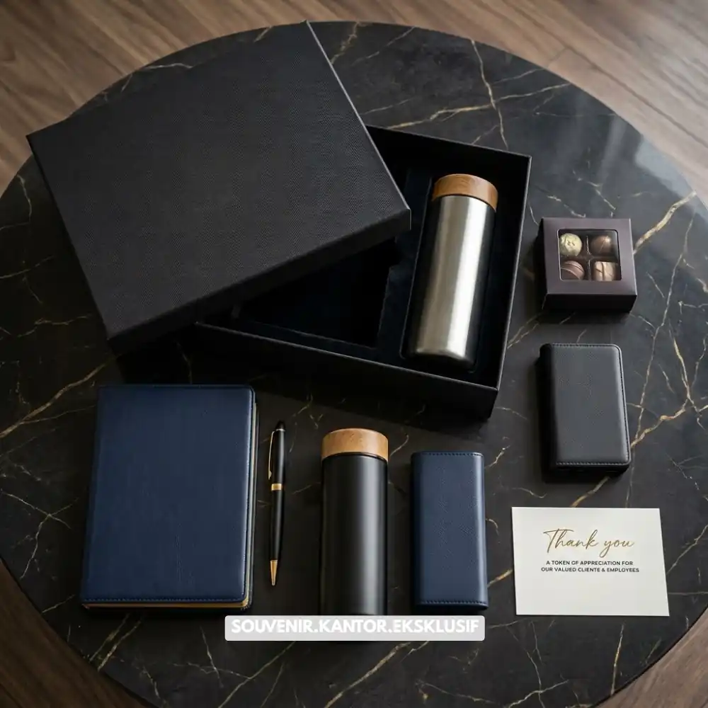

Daftar Isi
Set hadiah perusahaan adalah paket cinderamata korporat berisi kombinasi produk fungsional, dikemas elegan, dan diberi identitas brand untuk keperluan relasi bisnis.
Fungsinya mencakup penguatan loyalitas klien, apresiasi karyawan, dan media branding yang dipakai berulang. Vendor Souvenir menghadirkan set hadiah perusahaan siap custom sesuai kebutuhan instansi Anda.
- Set hadiah perusahaan menggabungkan produk fungsional dengan identitas brand.
- Digunakan untuk klien, mitra bisnis, karyawan, dan acara korporat.
- Komponen umum meliputi tumbler, notebook, dan aksesori kerja.
- Kemasan premium meningkatkan persepsi nilai merek secara signifikan.
- Vendor Souvenir menyediakan layanan custom lengkap dari desain hingga pengiriman.
Souvenir korporat yang dikemas dalam bentuk set memberi kesan lebih terencana dibanding barang lepasan. Berdasarkan studi Advertising Specialty Institute tahun 2023, sekitar 83 persen penerima merchandise korporat dapat mengingat nama perusahaan pemberi dalam waktu satu tahun sejak menerima produk tersebut.
Data lain dari studi yang sama menunjukkan penerima barang promosi cenderung memiliki persepsi lebih positif terhadap perusahaan pemberi dibanding yang hanya menerima iklan digital biasa. Angka ini menegaskan mengapa banyak instansi kini beralih dari souvenir tunggal menuju format set yang lebih terkurasi.
Apa Itu Set Hadiah Perusahaan dan Mengapa Dibutuhkan Bisnis Modern?
Set hadiah perusahaan adalah kumpulan produk korporat yang dirancang sebagai satu kesatuan hadiah, biasanya terdiri dari dua hingga lima item yang saling melengkapi secara fungsi maupun estetika. Kebutuhan ini muncul karena perusahaan membutuhkan cara yang lebih terstruktur untuk menyampaikan apresiasi, bukan sekadar memberi barang secara acak.
Berbeda dari souvenir satuan, set hadiah dirancang dengan tema yang konsisten, misalnya tema kerja produktif berisi notebook dan tumbler, atau tema apresiasi akhir tahun berisi kombinasi makanan ringan premium dan aksesori kantor. Konsistensi tema ini membuat penerima merasa hadiah tersebut dipikirkan secara khusus, bukan sekadar formalitas.
Bagi divisi HRD dan procurement, set hadiah perusahaan juga menyederhanakan proses pengadaan karena satu paket sudah mencakup kebutuhan branding, fungsi, dan estetika sekaligus. Hal ini mengurangi waktu koordinasi dibanding harus memilih dan mencocokkan produk satu per satu dari berbagai kategori.
Siapa Saja yang Membutuhkan Set Hadiah Perusahaan?
Kebutuhan ini umumnya datang dari lima kelompok utama, yaitu tim HRD untuk apresiasi karyawan, tim marketing untuk hadiah klien dan mitra, event organizer untuk goodie bag seminar atau gala dinner, divisi corporate secretary untuk cinderamata tamu penting, serta pemilik usaha kecil menengah yang ingin membangun relasi bisnis jangka panjang.
Masing-masing segmen memiliki preferensi berbeda. Tim HRD cenderung memilih set yang lebih personal dan hangat, sementara tim marketing lebih mengutamakan produk yang menonjolkan logo perusahaan secara visual demi memperkuat brand recall di mata klien.

Set Hadiah Perusahaan Premium untuk Branding Elegan
Kapan Waktu Terbaik Memberikan Set Hadiah Perusahaan?
Momentum pemberian sangat memengaruhi dampak emosional hadiah tersebut. Waktu yang umum digunakan mencakup akhir tahun sebagai bentuk apresiasi tahunan, hari jadi perusahaan, penandatanganan kerja sama baru dengan klien, acara seminar atau konferensi, serta hari besar keagamaan seperti Lebaran dan Natal.
Pemberian yang tepat waktu memperkuat asosiasi positif antara momen tersebut dengan brand perusahaan pemberi, sehingga penerima cenderung mengingat perusahaan setiap kali momen serupa terulang di tahun berikutnya.
Apa Saja Komponen Ideal dalam Set Hadiah Perusahaan?
Komponen ideal bergantung pada tujuan pemberian, namun secara umum set hadiah perusahaan yang efektif menggabungkan unsur fungsional, unsur estetika, dan unsur branding dalam satu kemasan yang serasi.
Unsur fungsional biasanya berupa produk yang dipakai sehari-hari seperti tumbler, notebook, atau flashdisk, sehingga logo perusahaan terus terlihat dalam jangka panjang. Unsur estetika mencakup kemasan seperti kotak kayu, box magnetic, atau tas kanvas premium yang membuat kesan unboxing terasa istimewa. Sementara unsur branding meliputi penempatan logo, warna korporat, dan tagline perusahaan secara konsisten di seluruh item.
Bagaimana Cara Menentukan Isi Set yang Tepat Sesuai Anggaran?
Penentuan isi set sebaiknya dimulai dari menetapkan kisaran anggaran per unit, kemudian memilih kombinasi produk yang paling relevan dengan penerima. Untuk anggaran menengah, kombinasi notebook dan tumbler custom umumnya sudah memberikan kesan profesional. Untuk anggaran lebih tinggi, penambahan item premium seperti pouch kulit sintetis atau power bank dapat meningkatkan nilai persepsi hadiah secara signifikan.
Pendekatan ini memungkinkan perusahaan tetap konsisten secara branding tanpa harus mengorbankan efisiensi biaya, karena setiap komponen dipilih berdasarkan fungsi dan dampak, bukan sekadar jumlah barang.
Apakah Set Hadiah Perusahaan Bisa Disesuaikan dengan Identitas Brand?
Ya, penyesuaian identitas brand merupakan bagian penting dari set hadiah perusahaan modern. Penyesuaian ini mencakup pencetakan logo, pemilihan warna kemasan sesuai brand guideline, penambahan kartu ucapan personal, hingga desain kemasan eksklusif yang mencerminkan karakter perusahaan.
Vendor Souvenir menyediakan layanan konsultasi desain sehingga setiap set hadiah dapat disesuaikan dengan identitas visual perusahaan Anda, mulai dari pemilihan warna hingga tata letak logo pada setiap produk.
Mengapa Kemasan Premium Penting dalam Set Hadiah Perusahaan?
Kemasan bukan sekadar pembungkus, melainkan bagian dari pengalaman penerima hadiah. Kemasan yang rapi dan premium menciptakan momen unboxing yang berkesan, yang pada akhirnya memperkuat citra profesional perusahaan pemberi.
Riset dari studi konsumen terkait pengalaman unboxing menunjukkan bahwa kemasan yang menarik secara visual dapat meningkatkan kemungkinan produk tersebut dibagikan atau diperlihatkan kepada orang lain, baik secara langsung maupun melalui media sosial. Efek ini secara tidak langsung memperluas jangkauan branding perusahaan tanpa biaya tambahan.
Jenis Kemasan Apa yang Paling Cocok untuk Hadiah Korporat?
Beberapa jenis kemasan yang umum digunakan meliputi kotak kayu dengan ukiran logo untuk kesan eksklusif, box magnetic dengan cetakan logo emboss untuk kesan modern, serta tas kanvas custom untuk kesan kasual namun tetap profesional. Pemilihan jenis kemasan sebaiknya disesuaikan dengan karakter acara dan target penerima hadiah.
Bagaimana Set Hadiah Perusahaan Berkontribusi pada Strategi Branding Jangka Panjang?
Setiap produk dalam set hadiah berfungsi sebagai media branding pasif yang terus bekerja setelah acara selesai. Selama produk tersebut digunakan, logo dan identitas perusahaan tetap terlihat oleh penerima maupun orang di sekitarnya, menciptakan efek pengulangan visual yang memperkuat brand recall secara alami.
Strategi ini particularly efektif untuk perusahaan B2B yang mengandalkan hubungan jangka panjang dengan klien, karena hadiah berkualitas menjadi pengingat konkret akan kerja sama yang sudah terjalin, jauh lebih personal dibanding materi promosi digital.
Apa Kesalahan Umum yang Harus Dihindari Saat Menyiapkan Set Hadiah Perusahaan?
Kesalahan yang sering terjadi meliputi pemilihan produk yang kurang relevan dengan kebutuhan penerima, logo yang dicetak terlalu besar sehingga terkesan berlebihan, kemasan yang terlalu sederhana untuk acara formal, serta pengadaan mendadak tanpa mempertimbangkan waktu produksi custom yang memadai.
Menghindari kesalahan ini membutuhkan perencanaan yang matang, termasuk menentukan kebutuhan sejak awal dan memberi waktu produksi yang cukup, terutama untuk pesanan dalam jumlah besar dengan tenggat waktu tertentu.
Tips Memaksimalkan Dampak Set Hadiah Perusahaan
Beberapa langkah yang dapat meningkatkan dampak set hadiah perusahaan antara lain menyertakan kartu ucapan personal dengan nama penerima, memilih tema yang relevan dengan momen pemberian, memastikan kualitas produk konsisten di seluruh unit pesanan, serta melakukan uji sampel sebelum produksi massal untuk memastikan hasil cetak logo sesuai harapan. Langkah-langkah ini sederhana namun berdampak besar terhadap kesan yang diterima oleh klien maupun karyawan, karena detail kecil sering kali menjadi faktor yang paling diingat.
Set hadiah perusahaan yang dirancang dengan baik mampu memperkuat hubungan bisnis, meningkatkan loyalitas karyawan, dan memperluas brand recall secara berkelanjutan. Kunci keberhasilannya terletak pada pemilihan komponen yang relevan, kemasan yang mencerminkan kualitas brand, serta perencanaan waktu produksi yang matang.
Vendor Souvenir siap membantu perusahaan Anda merancang set hadiah korporat yang sesuai kebutuhan dan anggaran, mulai dari konsultasi desain hingga produksi custom logo. Hubungi Vendor Souvenir sekarang melalui vendorsouvenir.web.id untuk konsultasi gratis dan dapatkan penawaran terbaik untuk set hadiah perusahaan Anda.

Butuh Bantuan Merancang Set Hadiah Perusahaan Premium?
Tim ahli kami siap membantu Anda menyusun paket hadiah eksklusif yang menarik.
Pilihan barang akan disesuaikan dengan ketersediaan budget dan kebutuhan Anda.
FAQ Set Hadiah Perusahaan
Berapa jumlah minimum pemesanan set hadiah perusahaan?
Jumlah minimum pemesanan bervariasi tergantung jenis produk dan kompleksitas custom, namun umumnya vendor souvenir korporat menerima pesanan mulai dari skala kecil hingga ribuan unit. Vendor Souvenir dapat menyesuaikan jumlah pesanan sesuai kebutuhan instansi Anda.
Berapa lama waktu produksi set hadiah perusahaan custom?
Waktu produksi umumnya bergantung pada jumlah pesanan dan kompleksitas desain, sehingga sebaiknya pemesanan dilakukan jauh sebelum tanggal acara untuk menghindari keterlambatan.
Apakah bisa menambahkan logo perusahaan pada semua item dalam set?
Ya, hampir seluruh item dalam set hadiah perusahaan dapat diberi logo melalui teknik cetak, emboss, atau ukir tergantung jenis material produk.
Apakah set hadiah perusahaan bisa disesuaikan untuk kebutuhan syariah atau tanpa unsur tertentu?
Bisa, komponen set dapat disesuaikan agar sesuai dengan kebutuhan atau preferensi tertentu, termasuk memilih produk yang netral secara budaya maupun keagamaan.
Apakah tersedia sampel produk sebelum pemesanan dalam jumlah besar?
Umumnya tersedia opsi sampel terbatas untuk memastikan kualitas dan hasil cetak logo sesuai ekspektasi sebelum produksi massal dilakukan.
Bagaimana cara memesan set hadiah perusahaan di Vendor Souvenir?
Anda dapat menghubungi tim Vendor Souvenir melalui vendorsouvenir.web.id untuk konsultasi kebutuhan, pemilihan produk, dan estimasi biaya sebelum melakukan pemesanan.
Maroon Souvenir
Partner Corporate Gift terpercaya di Indonesia. Berpengalaman melayani ratusan perusahaan sejak 2018.
Lihat Portofolio Kami